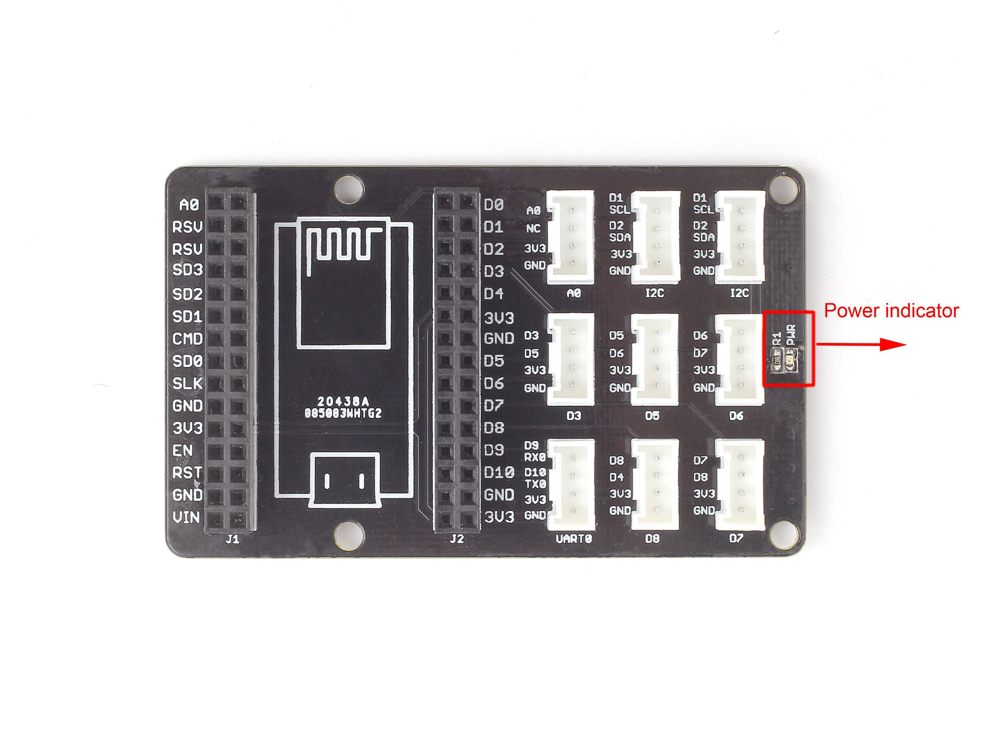

Grove Base Shield for NodeMCU is an extension board that help you to play with Grove sensors on an ESP8266 WIFI development kit which called NodeMCU. You can run Grove sensor with Lua script language in the NodeMCU firmware.
The purpose of the base shield is to allow easy connection of any microprocessor input and output pins to the Grove units. For a more detailed examination of the Base Board, please refer to the following diagram:

Note:
1. The staggered alignment of the pins – that is, D3 socket handles D3 and D5, D5 socket handles D5 and D6, the next D6 and D7, and so on.
2. There is no D4 socket.
3. UART Socket can multiplex with D9, D10 port and I2C Socket can multiplex with D1, D2 port.
4. It does not conflict if use four I2C Sockets simultaneously because every I2C device has its own address.
5. There is no SPI socket. Since none of the Grove module is using SPI socket.
Grove Base Shield for NodeMCU_sch Eagle file
Grove Base Shield for NodeMCU v1.0.pdf